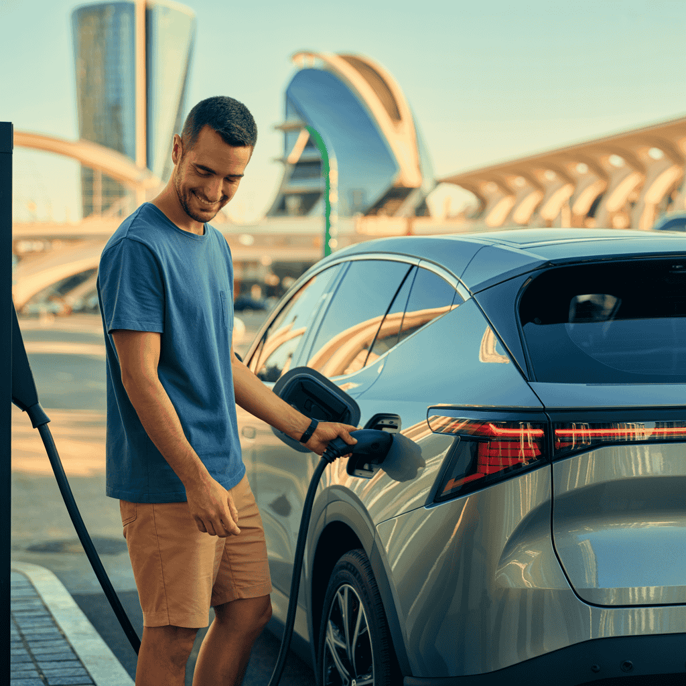

La industria del automóvil eléctrico podría estar a punto de dar un salto cuántico. Chery, el gigante automovilístico chino, ha presentado un módulo de batería de estado sólido con una densidad energética récord de 600 Wh/kg, capaz de ofrecer hasta 1.300 km de autonomía con una sola carga. Esta cifra duplica prácticamente la capacidad de las mejores baterías actuales y podría cambiar radicalmente la percepción sobre los coches eléctricos.
El anuncio, realizado en el marco del Salón de la Tecnología de Chery en Wuhu (China), ha sacudido a la industria. Según los datos presentados, esta tecnología podría reducir significativamente el peso de las baterías, mejorar los tiempos de carga y aumentar la seguridad, tres de los principales retos actuales de la movilidad eléctrica.
🔋 ¿Qué es la batería de estado sólido de Chery y cómo funciona?
A diferencia de las baterías de iones de litio convencionales, que utilizan electrolitos líquidos o en gel, las baterías de estado sólido emplean un electrolito sólido. Este cambio estructural ofrece varias ventajas clave:
- Mayor densidad energética: Más capacidad en el mismo espacio o el mismo peso.
- Mayor seguridad: Menor riesgo de incendio al no tener líquidos inflamables.
- Tiempos de carga más rápidos: Potencial para cargas ultra rápidas.
- Mayor vida útil: Mejor resistencia a la degradación con el tiempo.
- Mejor rendimiento en frío: Menor pérdida de capacidad a bajas temperaturas.
💡 Dato clave:
La batería de Chery utiliza un electrolito cerámico sólido que permite una mayor densidad energética (600 Wh/kg) frente a los 250-300 Wh/kg de las mejores baterías actuales de iones de litio.
Según los ingenieros de Chery, su prototipo ya ha superado con éxito las pruebas de resistencia y seguridad básicas, incluyendo pruebas de impacto, perforación y exposición a temperaturas extremas. Sin embargo, el mayor desafío sigue siendo la producción a gran escala, un obstáculo que ha frenado a otros fabricantes en el pasado.
⚡ Densidad energética: 600 Wh/kg y sus implicaciones reales
La cifra de 600 Wh/kg es lo que más ha llamado la atención del anuncio de Chery. Para ponerlo en contexto:
- Baterías actuales (2025): 250-300 Wh/kg
- Objetivo industria para 2030: 400-500 Wh/kg
- Batería Chery: 600 Wh/kg
Esta mayor densidad energética significa que, para un mismo peso, la batería de Chery podría almacenar aproximadamente el doble de energía que las baterías actuales. O lo que es lo mismo: para la misma capacidad, la batería pesaría la mitad.
En términos prácticos, un coche eléctrico medio con una batería de 100 kWh actualmente pesa entre 500-700 kg. Con la tecnología de Chery, ese mismo coche podría tener una batería de 200 kWh con el mismo peso, o mantener los 100 kWh pero reduciendo el peso a la mitad, lo que mejoraría la eficiencia y el rendimiento.
🔬 Comparativa frente a baterías LFP, NCM y otras tecnologías emergentes
Para entender el avance que supone la batería de Chery, es útil compararla con las tecnologías actuales y emergentes:
| Tecnología | Densidad (Wh/kg) | Ventajas | Desventajas |
|---|---|---|---|
| LFP (actual) | 140-180 | Segura, larga vida útil, bajo coste | Baja densidad, pobre rendimiento en frío |
| NCM 811 (actual) | 250-300 | Alta densidad, buen rendimiento | Mayor coste, problemas de degradación |
| Semi-sólido (2024) | 350-400 | Mayor seguridad, carga rápida | Retos de fabricación, coste elevado |
| Chery Estado Sólido | 600 | Máxima densidad, seguridad, carga ultrarrápida | Desafíos de producción, coste inicial muy alto |
Como se puede apreciar, la tecnología de Chery supera ampliamente a las soluciones actuales. Sin embargo, el principal desafío sigue siendo la producción a gran escala y el coste, que inicialmente será muy superior al de las baterías convencionales.
Si te interesa conocer más sobre las diferencias entre tecnologías de baterías, te recomendamos nuestro artículo sobre baterías LFP vs NCM: diferencias y cuál elegir.
⚠️ Retos por delante: costes, ciclabilidad, seguridad y fabricación
Aunque el anuncio de Chery es prometedor, es importante ser cautelosos. La historia de las baterías de estado sólido está llena de anuncios ambiciosos que luego han chocado con la realidad de la producción en masa. Estos son los principales retos que debe superar esta tecnología:
1. Escalado de producción
Fabricar celdas de estado sólido en laboratorio es una cosa; producirlas a escala industrial, otra muy distinta. Los materiales cerámicos utilizados son frágiles y requieren condiciones de fabricación muy controladas.
2. Coste por kWh
Inicialmente, estas baterías serán significativamente más caras que las convencionales. Se estima que el coste podría ser entre un 50-100% superior al de las baterías actuales, aunque a largo plazo podrían igualarse o incluso ser más económicas.
Importante: Chery no ha proporcionado detalles sobre el coste por kWh de su batería, un dato clave para evaluar su viabilidad comercial a corto plazo.
3. Vida útil y ciclabilidad
Las baterías de estado sólido han mostrado históricamente problemas de degradación con los ciclos de carga/descarga. Chery afirma haber superado este obstáculo, pero solo el tiempo y las pruebas independientes lo confirmarán.
4. Tiempos de carga reales
Aunque teóricamente podrían cargarse más rápido, la carga ultrarrápida genera calor que puede dañar los materiales sólidos. La gestión térmica será clave para aprovechar todo su potencial.
🌍 ¿Qué significaría para el mercado europeo y los fabricantes chinos?
La entrada de Chery en la carrera por las baterías de estado sólido tiene implicaciones estratégicas para el mercado global:
Para los fabricantes chinos
- Posición de liderazgo en la próxima generación de baterías
- Mayor competitividad frente a marcas occidentales
- Posibilidad de licenciar la tecnología a otros fabricantes
Para el mercado europeo
- Dependencia tecnológica de proveedores asiáticos
- Presión para acelerar el desarrollo propio
- Oportunidades de colaboración tecnológica
Europa está invirtiendo fuertemente en su propia industria de baterías, pero el anuncio de Chery subraya el desafío que supone competir con la capacidad de innovación y producción de China. Según un informe reciente, China controla actualmente más del 75% de la producción global de celdas de batería.
🔍 Análisis: ¿realmente cambia el paradigma del coche eléctrico?
El anuncio de Chery es sin duda significativo, pero es importante contextualizarlo adecuadamente. Estas son las claves para entender su verdadero impacto:
Lo positivo
- Verificación independiente: A diferencia de otros anuncios, Chery ha permitido pruebas independientes que confirman sus cifras de densidad energética.
- Enfoque modular: El diseño modular facilitaría la adaptación a diferentes vehículos y aplicaciones.
- Rendimiento en frío: Datos preliminares muestran una pérdida de solo el 15% de autonomía a -20°C, muy por debajo del 30-40% de las baterías actuales.
Lo cuestionable
- Escalabilidad: No está claro si pueden producirse millones de celdas con la misma calidad y rendimiento.
- Vida útil: Falta información sobre el número de ciclos de carga que soporta antes de degradarse significativamente.
- Coste real: Sin un precio por kWh, es difícil evaluar su viabilidad comercial a corto plazo.
En mi opinión, este anuncio es un paso importante, pero no debemos esperar una revolución inmediata. Es probable que veamos esta tecnología primero en vehículos premium y aplicaciones especializadas antes de llegar al mercado masivo.
💭 Reflexión:
La batería perfecta no existe, pero cada avance como este nos acerca más a superar las limitaciones actuales de los coches eléctricos. La clave estará en encontrar el equilibrio entre densidad energética, coste, seguridad y vida útil.
🔮 Conclusión: ¿qué esperar en los próximos años?
El anuncio de Chery marca un hito en el desarrollo de baterías para vehículos eléctricos, pero es solo el comienzo de un proceso que llevará varios años. Estas son las perspectivas a corto y medio plazo:
2025-2026: Validación y primeros prototipos
Veremos los primeros prototipos de vehículos equipados con esta tecnología, probablemente en modelos conceptuales o ediciones limitadas. Será crucial ver cómo se comportan en condiciones reales y cuál es su coste real de producción.
2027-2028: Llegada al mercado premium
Si todo va según lo previsto, las primeras versiones de producción podrían llegar a vehículos premium, donde los mayores costes son más asumibles. Es probable que inicialmente se limiten a modelos de gama alta de las marcas del grupo Chery.
2030 y más allá: Madurez y adopción masiva
Para esta fecha, la tecnología podría haberse abaratado lo suficiente como para llegar a vehículos más asequibles, cumpliendo así la promesa de autonomías de 1.000+ km a precios competitivos.

Mientras tanto, los compradores de vehículos eléctricos pueden estar tranquilos: las baterías actuales ya ofrecen autonomías más que suficientes para el uso diario, con la ventaja de una infraestructura de carga cada vez más extendida y precios en descenso.
¿Quieres saber más sobre el futuro de las baterías? No te pierdas nuestro análisis sobre cómo los precios de las baterías podrían caer por debajo de los 3.000€ en 2030.
Preguntas frecuentes sobre la batería de estado sólido de Chery
🔹 ¿Qué es exactamente una batería de estado sólido?
Una batería de estado sólido reemplaza el electrolito líquido o en gel de las baterías convencionales por un material sólido. Esto permite mayor densidad energética, menor riesgo de incendio y mayor vida útil. La de Chery alcanza 600 Wh/kg frente a los 250-300 Wh/kg de las mejores baterías actuales.
🔹 ¿Cuándo llegarán al mercado los coches con esta tecnología?
Según Chery, los primeros prototipos con esta tecnología podrían verse en 2026, con producción en serie a partir de 2027-2028. Sin embargo, los desafíos de fabricación a gran escala podrían retrasar estas fechas.
🔹 ¿Qué ventajas tiene sobre las baterías actuales?
Mayor densidad energética (más autonomía), tiempos de carga más rápidos, mayor seguridad (menor riesgo de incendio), mayor vida útil (más ciclos de carga) y mejor rendimiento en temperaturas extremas.
🔹 ¿Serán más caros los coches con esta tecnología?
Inicialmente sí, probablemente entre un 20-30% más que los vehículos eléctricos actuales equivalentes. Sin embargo, a medida que se escalen las producciones, se espera que los precios se equiparen o incluso sean menores que las baterías actuales.
🔹 ¿Qué otros fabricantes están desarrollando baterías de estado sólido?
Prácticamente todos los grandes fabricantes están investigando esta tecnología, incluyendo Toyota, Volkswagen, BMW, Ford y startups como QuantumScape y Solid Power. Sin embargo, Chery parece haber tomado la delantera en términos de densidad energética anunciada.
Fuentes y referencias
Este artículo se basa en el anuncio oficial de Chery, análisis de expertos en baterías del Instituto de Tecnología de Massachusetts (MIT) y la Universidad de Stanford, así como en informes del Departamento de Energía de EE.UU. y la Agencia Internacional de la Energía sobre el estado actual y futuro de las tecnologías de almacenamiento de energía para vehículos eléctricos.
Última actualización: 28 de octubre de 2025